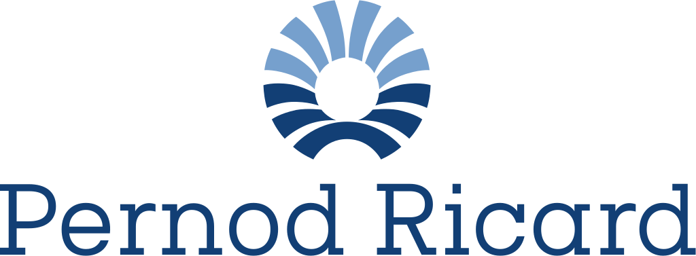

Ranglister Forbrug: fødevarer, drikke & restauranter Pernod Ricard

Pernod Ricard
58
15070100
Et blik på de samme fund, ikke en ny score. Sådan virker det
En god forretning med et reelt spørgsmålstegn: prisen, en revne eller begge dele.
Største fradrag
- Gæld−5
- Kunderne bevæger sig (lagertilpasning)−5
- Fremtidens segment og voldgrav−4
Styrker
- Pengestrøm og omkostninger+2
- Spredt base+1
Sådan er scoren bygget op
Fra 100 til 58, trin for trin: point trækkes fra for forretningen, prisen og revnerne, lægges til for dokumenterede styrker, og så følger tre datajusteringer.
Start
Score
Hold musen over et trin eller vælg det for at se, hvad der drev det. Trin med fund åbner dem nedenfor.
Nøgletal
Pr. 6 nov. 2026. Analytikernes kursmål er ofte optimistiske; læs opsiden som et fingerpeg, ikke en prognose.
- Pris
- 71.14 EUR
- Analytikernes mediankursmål
- 74.00 EUR
- Opside til median
- +4.0%
- Analytikere
- 20
- Kursmålsinterval
- 60.00 – 122.00 EUR
- 52-ugers ændring
- −16%
- P/E (historisk)
- 14.9
- Forward P/E
- 12.4
- PEG
- 4.53
Fund
Hvert fradrag og hvert plus med sin kilde. Åbn et trin for at læse dem.
Forretning
Bliver virksomheden stærkere, ikke bare større? · 4 fund−11 af −30
- −4Fremtidens segment og voldgravOrganisk omsætning -3,9 % i FY26 (rapporteret -14,2 %) med USA -14 % og Kina -19 %; uden USA og Kina kun +0,5 %. I USA faldt sell-out 7 % mod markedet (tab af markedsandele), og i Kina taber selskabet andele i cognac og prestige. Mellemsigtsmålet er skåret til 'tæt på bunden' af 3–6 %.
- −3ROICROIC er faldet fra 9,5–10,0 % i FY22–23 til 8,0 % i FY25 og 6,4 % nu; ROE 7,6 % og ROCE 7,5 % – under kapitalomkostningen for en gældstung koncern.
- −2MarginDriftsmarginen er gledet fra 28,2 % (FY22) til 25,7 %, og bruttomarginen faldt 216 bp til 59,3 % i FY26 pga. told, inflation, negativt pris/mix og lavere udnyttelse af fabrikkerne.
- −2KapitalallokeringKøbte egne aktier for 1,9 mia. EUR i FY22–24 til kurser på 110–173 EUR (nu 60), og holder udbyttet på 4,70 EUR (payout 102 % af EPS; udbytte 1.226 mio. mod FCF 1.188 mio.) med nettogæld/EBITDA 3,7x – slutudbyttet tilbydes i aktier for at spare kontanter.
Pris
Dagens multipler mod selskabets egen historik og dets sammenlignelige selskaber. · 1 fund−3 af −35
- −3Multipler mod egen historik og peersForward P/E 10,3 mod 10,9–20,5 i FY22–26; EV/EBITDA 9,6 mod 10,4–17,1; P/FCF 12,4 mod 13,5–39,0. Under egen historik og under Diageo (forward P/E 12,8, EV/EBITDA 10,6), men EV/FCF er 22 pga. gælden, og analytikerne venter faldende EPS (-2 %) i FY27, så rabatten er delvis fortjent.
Revner
Cash flow, kunder, gæld, insidere, guidance og det, der ligger bag hovedtallene. · 3 fund−14 af −35
- −5GældNettogæld 10,7 mia. EUR og nettogæld/EBITDA 3,7x (mod 2,7x i FY22–23); målet under 3,0x nås først i FY29. Rentebetalinger steget fra 275 til 465 mio. EUR, rentedækning 4,9x og Altman Z 1,32.
- −5Kunderne bevæger sig (lagertilpasning)FY27-guidance er kun 'stort set stabil' organisk omsætning: USA og Kina ventes at falde igen pga. lagertilpasninger hos distributørerne fra Q1, og ledelsen venter, at USA forbliver svagt på mellemlang sigt.
- −4Makro, told og reguleringAmerikansk told på europæisk spiritus og cognac-sagen i Kina (minimumspris-aftale efter anti-dumping-undersøgelsen) presser pris og margin; konflikten i Mellemøsten gav -29 % i regionen i Q4 og ventes at trække ned i FY27.
Plus
Kun dokumenterede styrker. · 2 fund+3 af +15
- +2Pengestrøm og omkostningerFCF steg 6 % til 1.197 mio. EUR med 91 % cash conversion (mål 80 %), og effektiviseringsprogrammet på 1 mia. EUR er halvt leveret og færdigt i FY28, et år før plan; strukturomkostninger -8 % organisk.
- +1Spredt baseBred brandportefølje og geografi; Indien, det næststørste marked, voksede 7 % (9 % uden Imperial Blue) og ventes at vokse stærkt i FY27.
Forbehold
Det, scoren ikke fanger, eller hvor dataene er svage.
Regnskabsåret slutter 30/6; FY26 = juli 2025–juni 2026. Rapporteret EPS 4,77 EUR ligger under justeret EPS (ca. 5,85), og forward P/E 10,3 bygger på justerede tal; det rapporterede fald (-14,2 %) er stærkere end det organiske (-3,9 %) pga. valuta og salget af Imperial Blue. Selskabets egen nettogæld/EBITDA er 3,7x, stockanalysis viser 4,1x. Ricard-familien (ca. 14 % af aktierne, flere stemmer via dobbeltstemmeret) og Alexandre Ricard som CEO er nævnt uden point; familien tog slutudbyttet i aktier. Kreditrating (S&P/Moody's) og insiderhandler er ikke undersøgt. Flere kursmål (fx Bernstein 110 EUR) ligger langt over kursen og er ikke et fund. Q1 FY27-omsætning ca. 22. okt. 2026.
Også i Forbrug: fødevarer, drikke & restauranter
De højeste scorer i samme branche.